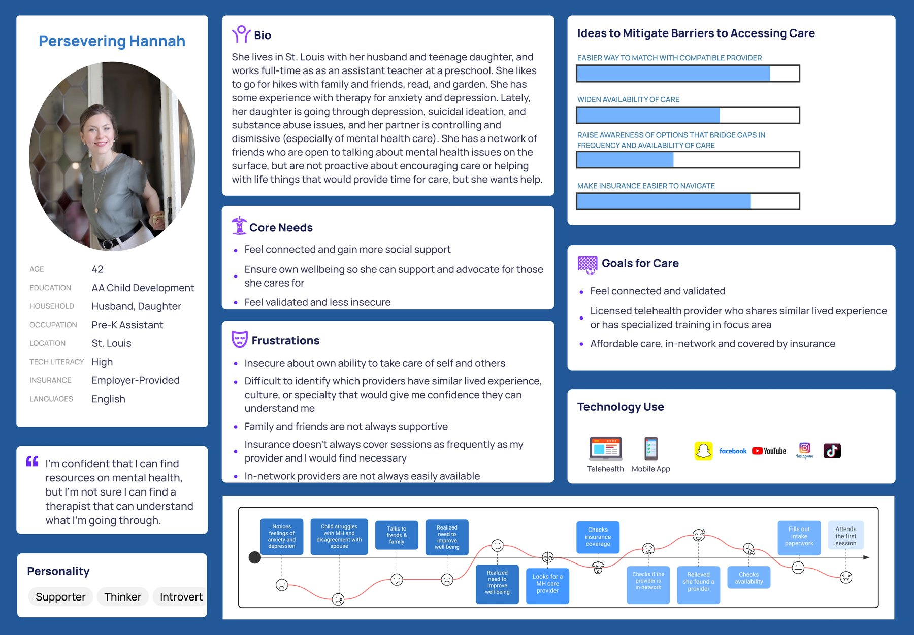
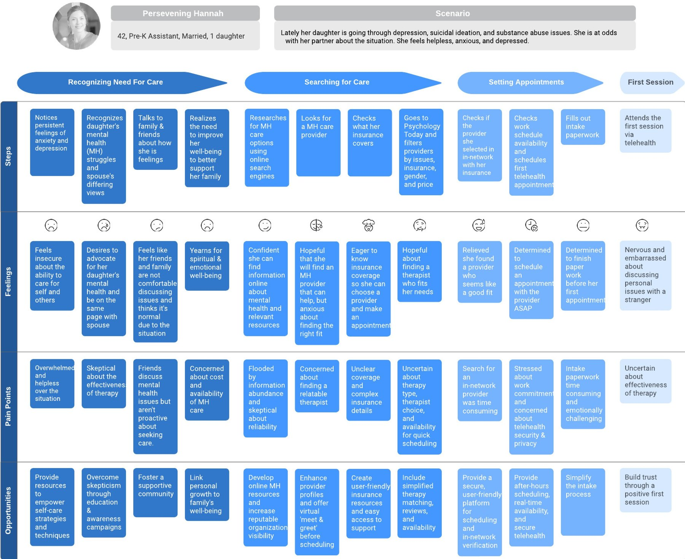
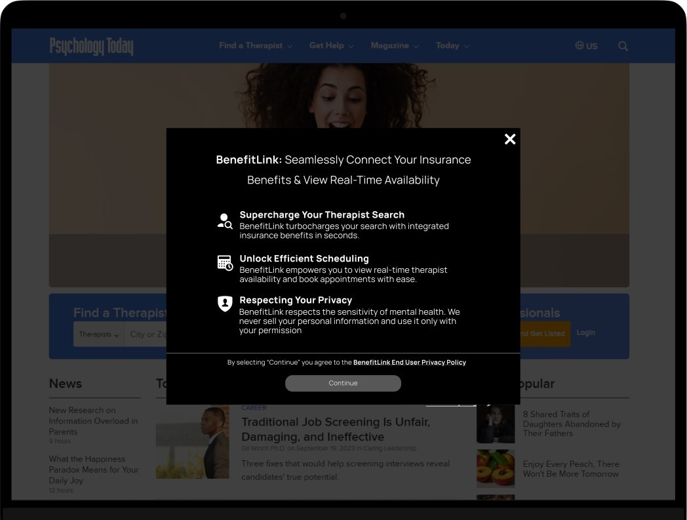
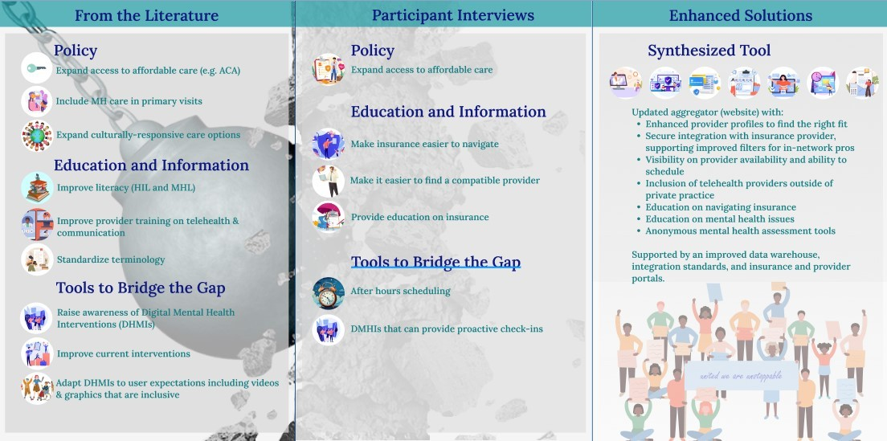
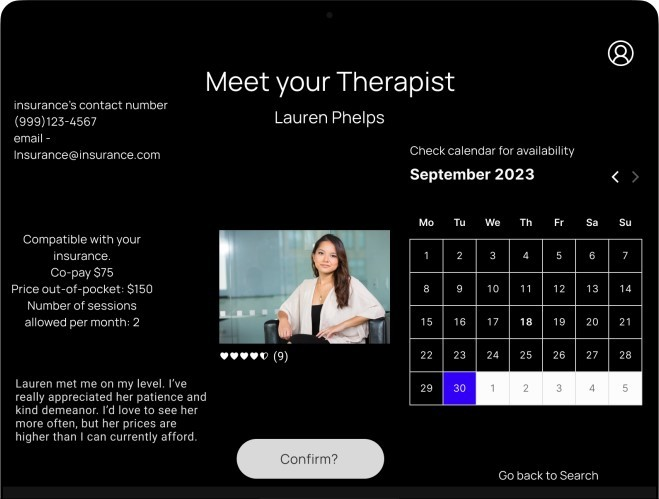
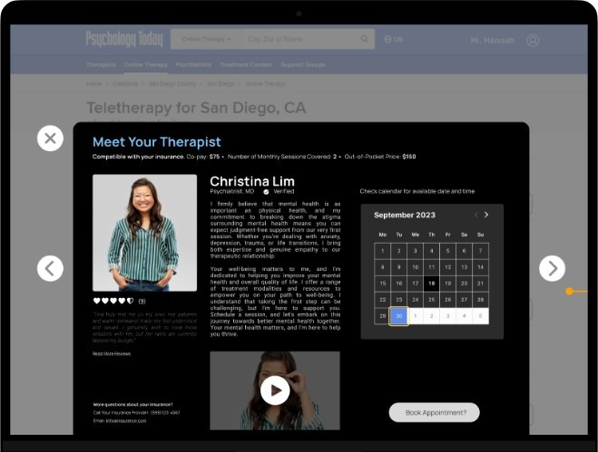
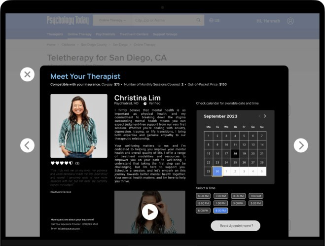

Improving Access to Care
A co-designed study on technological interventions to alleviate barriers for individuals seeking mental health support.
- Role
- UX design, UI design, UX research, QA
- Team
- 3 UX design graduate students
- Timeline
- 8 weeks: 2+ weeks of discovery and research, 6 weeks of design and testing
- Tools
- Miro, Figma, PowerPoint, Ziro

From a user interview
“That it's ok. That it's not your fault. Seeking mental healthcare is similar to other things like seeking help for diabetes. We don't criminalize people for having physical ailments, why are mental health concerns so jarring?”
The problem
Many people are interested in, or feel the need to, better their mental health. For any number of reasons, they encounter obstacles getting there, which in turn can lead to increased feelings of anxiety, helplessness, and worse health that can spiral on to affect others in their life.
Some of the most common obstacles we observed as UX professionals were the perception of limited time, financial hardship, personal hardship, family style, cultural stigma, and lack of support.
The solution
Together with stakeholders and users, we explored interventions that might help mitigate the barriers that prevent access to mental healthcare.
We found that a telehealth platform focused on equality, with real-time availability and transparent insurance coverage, would benefit both the client and the provider.
User interviews
During the ideation phase of the project, we conducted user interviews with a number of individuals and healthcare professionals, then synthesized the data to build new personas to inform the design.
Together with the team, we prepared interview scripts with open-ended questions, focusing on our target audience's values, motivations, and obstacles. In a few days, we recruited and interviewed 8 generous people remotely.
Once we had all conducted our interviews, we synthesized them into a data slush, coded and analyzed them for similarities, and used the findings as a reference throughout the entire design process.
Synopsis: 5 individuals seeking care and 3 mental healthcare professionals interviewed.
Main barrier perspectives
- Stigma
- Cost and inadequate insurance coverage
- Mental health and insurance literacy
- Demand for care exceeds provider availability
- Disparities in access to care among marginalized groups
Findings: a telehealth platform that focuses on equality, with real-time availability and transparent insurance coverage, would benefit both the client and the provider.
Personas
We wanted to form a deeper understanding of our users' goals, needs, experiences, and behaviors, so we created 2 personas for each of our user segments. They were based purely on data from our user interviews and weren't fully created until we had all of our data codified and analyzed.
We used these personas whenever we wanted to step out of ourselves and reconsider our initial ideas. They very much aided our design decisions and helped inform the prototype.


Journey maps


Wireframes
Using Figma, I translated my first sketches into low-fidelity wireframes, then improved them by adding a few relevant stock images from Unsplash. At this stage, the wireframes were defined enough for some user testing.
Testing the wireframes showed minor oversights, which let us add extra elements such as an FAQ area, and led to a reduction in the number of screens needed for the prototype.
Based on several tests, we made a few alterations and moved on to creating mid-fidelity prototypes.

UI design
Once the usability issues were resolved, we moved on to designing the final screens in Figma. Our goal was to create a visual identity that aligned with the project's values and message.
I mostly stayed with a dark material design, as many users enjoy the boldness of dark mode. It's also easier on the eyes and can help the user feel more at ease, with less visual strain.



